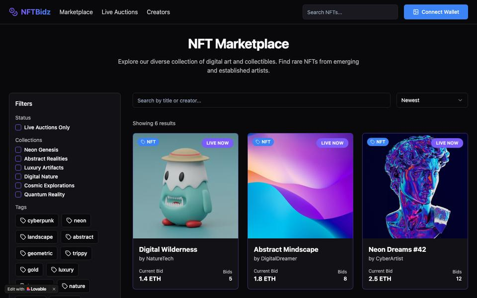
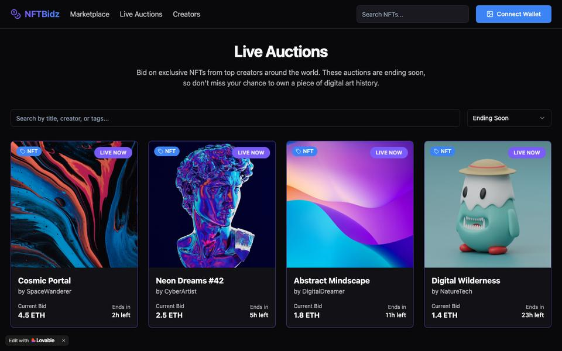

NFT marketplace & credit
NFT lending
Lend against an asset with no reliable price, and the interface is the least of your problems.



Open the live prototype ↗ demo data throughout
The why, in one breath
People own digital art worth real money but can’t borrow against it, because nobody can agree what it’s worth. This concept sizes the loan by what the art actually sells for — and plans the sale before the loan exists.
Premise
An NFT holder is asset-rich and liquidity-poor — crypto’s version of the borrower whose portfolio doesn’t count. Borrowing against the asset unlocks capital without a sale.
Why it’s hard
No reliable price — the “floor” is one thin order from fiction. Liquidity vanishes exactly when liquidations cluster. And the keenest borrowers know their valuation is generous.
The insight
When you can’t price the collateral, price the exit: what will it fetch, how fast, in a bad week? Card rails call this thin-file underwriting.
The underwriting design
A lending book that admits what it doesn’t know.
North star: LTV accuracy vs realised sale price. ★
Loan volume is actively perverse here — it grows fastest when underwriting is worst, and adverse selection guarantees the growth arrives. Every other number inherits its honesty from the oracle’s marks being tested against what liquidated collateral actually fetched.
time-to-liquidate (calm vs stress)bad-debt ratevolume — watched, not targeted